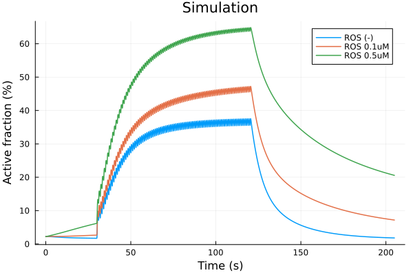
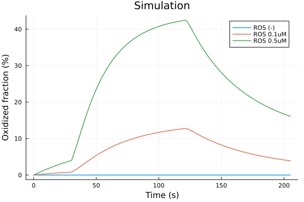
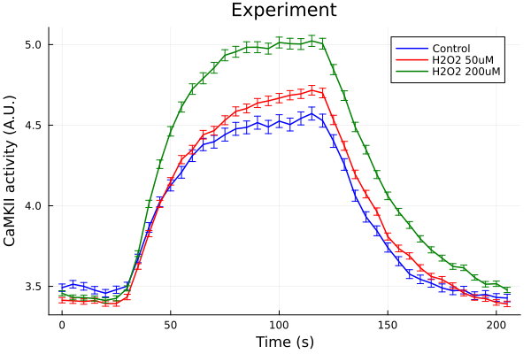

ROS effects#
using ModelingToolkit
using OrdinaryDiffEq, DiffEqCallbacks
using Plots
using CSV
using DataFrames
using Dates
using CaMKIIModel
using CaMKIIModel: second, μM
Plots.default(lw=1.5)
Setup model#
sys = build_neonatal_ecc_sys(simplify=true, reduce_iso=true, reduce_camk=true)
tend = 205second
prob = ODEProblem(sys, [], tend)
stimstart = 30second
stimend = 120second
@unpack Istim = sys
callback = build_stim_callbacks(Istim, stimend; period=1second, starttime=stimstart)
alg = KenCarp47()
KenCarp47(; linsolve = nothing, nlsolve = OrdinaryDiffEqNonlinearSolve.NLNewton{Rational{Int64}, Rational{Int64}, Rational{Int64}, Rational{Int64}}(1//100, 10, 1//5, 1//5, false, true, 0//1), precs = DEFAULT_PRECS, smooth_est = true, extrapolant = linear, controller = PI, autodiff = ADTypes.AutoForwardDiff(),)
Comparisons#
@time sol = solve(prob, alg; callback)
7.285494 seconds (26.83 M allocations: 1.207 GiB, 3.76% gc time, 84.86% compilation time)
retcode: Success
Interpolation: 3rd order Hermite
t: 4071-element Vector{Float64}:
0.0
0.019333123284849308
0.09098129546757994
0.20735582943983855
0.45611910276862533
1.0472562928406122
2.0342667657223696
3.451776641148454
6.733792423912806
12.450117081023194
⋮
153525.25012366346
158165.8598019807
163776.6411118618
169611.6642461836
176342.19489586214
183684.1140466068
191258.90946281631
199427.37350661293
205000.0
u: 4071-element Vector{Vector{Float64}}:
[0.0026, 830.0, 830.0, 0.00702, 0.966, 0.22156, 0.09243, 0.00188, 0.00977, 0.26081 … 0.12113, 0.12113, 0.12113, 0.12113, 0.12113, 0.12113, 0.12113, -68.79268, 13838.37602, 150952.75035000002]
[0.0025985659590295374, 829.9994975880693, 829.9999654017583, 0.007020208561323646, 0.9660018276402699, 0.2215639938807744, 0.09242766669618695, 0.001879826176081169, 0.009769882842069916, 0.2608055799112056 … 0.12113000000000405, 0.12113000000038378, 0.12113000001389383, 0.12113000037367234, 0.12113000811850358, 0.1211301421535992, 0.1211319185255175, -68.79732946186226, 13838.375711519551, 150952.7504077194]
[0.002593310524681686, 829.9976422525165, 829.9998348635061, 0.00702008986027517, 0.9660085993318799, 0.2215787945110049, 0.09241901973901424, 0.0018789042446514422, 0.009769459049732313, 0.26078941009382306 … 0.12113000089551408, 0.12113000693481112, 0.12113004704056851, 0.12113027926811751, 0.12113143375871603, 0.12113624253259858, 0.12115248970210647, -68.81607005265552, 13838.374513299192, 150952.75062244057]
[0.0025849478335103777, 829.9946506157202, 829.9996133960318, 0.007017234889558555, 0.9660195931792828, 0.22160283236040595, 0.09240497563401104, 0.0018766436937193197, 0.009768805322556195, 0.2607638707001999 … 0.12113010483012125, 0.12113038966346881, 0.12113131833063846, 0.12113403405679994, 0.12114109135582983, 0.12115723910142133, 0.12118951551963694, -68.84681913285226, 13838.372555328333, 150952.7509740238]
[0.00256770780104998, 829.9883445519497, 829.9990964774663, 0.0070030143052343926, 0.9660430731013478, 0.2216542075240971, 0.0923749578279845, 0.0018699196262940564, 0.00976754294689657, 0.2607122383588733 … 0.12113292110288297, 0.12113633873395534, 0.12114295934422185, 0.1211549441109046, 0.12117519662647316, 0.12120713813483533, 0.12125418995384044, -68.91207316777846, 13838.368384399068, 150952.7517373371]
[0.0025298083713907005, 829.9738229154025, 829.9976227528975, 0.006946470397388757, 0.9660987611411453, 0.22177624785138977, 0.09230364339951613, 0.0018505337694469416, 0.009765228548607825, 0.26060507831375035 … 0.12115849269665876, 0.12117335985880447, 0.12119414515426223, 0.12122229800810431, 0.12125925929399749, 0.12130632552358435, 0.12136450208851982, -69.06429960994137, 13838.358559292059, 150952.75361533565]
[0.0024748079782158957, 829.9509077855928, 829.9944193668179, 0.0068337541728754475, 0.9661914345949096, 0.2219798989175973, 0.09218462776986637, 0.0018178174419014681, 0.009763403076884485, 0.26047114911179464 … 0.121224541218447, 0.12125242557826559, 0.12128628091507473, 0.12132672249013034, 0.12137426379919634, 0.12142927821043341, 0.12149196513254243, -69.31024285744343, 13838.34240329337, 150952.75694915713]
[0.0024106893964811315, 829.9205247545176, 829.9883533251192, 0.006675512062656749, 0.9663239343003682, 0.22227216398019892, 0.09201383579531924, 0.0017738156907532244, 0.009765046552800477, 0.2603648729749554 … 0.12132150441596071, 0.1213585548820791, 0.12140052118634265, 0.12144759471003594, 0.12149988983034501, 0.12155743299711903, 0.1216201542687696, -69.64637448767432, 13838.319723120678, 150952.76215620188]
[0.002310655727734336, 829.8589858006806, 829.9689941817725, 0.006355039713677859, 0.9666286957812559, 0.22294828828976576, 0.09161908329520764, 0.0016855899094922325, 0.009786689200123853, 0.26041507667541997 … 0.12150439833798567, 0.12154722283384199, 0.12159304920072046, 0.1216418099553358, 0.12169340184085989, 0.12174768443532383, 0.12180447948880607, -70.35063788657428, 13838.2694938995, 150952.77598869594]
[0.0022289950402245105, 829.7704141396295, 829.923524981244, 0.005926150085676071, 0.9671554512230358, 0.22412560303273427, 0.09093422465365385, 0.0015688568862426045, 0.009873892913308327, 0.26104417804603025 … 0.12171274673876376, 0.12175152667167376, 0.12179171693004416, 0.12183318573340746, 0.12187579038290353, 0.12191937753328339, 0.12196378364408178, -71.35304509818071, 13838.18882346682, 150952.80529264064]
⋮
[0.002042782249961825, 784.5705928361865, 784.9343641366869, 0.0062857429610339985, 0.9997476285219716, 0.9996108819600831, 0.0015108660008012111, 0.002426439009309195, 0.0015675234985920228, 0.0011157701814115966 … 0.13694598688420098, 0.13694596415399937, 0.13694593696562782, 0.13694590539946194, 0.1369458695326783, 0.13694582943941114, 0.13694578519090012, -70.430824409181, 13607.749833006836, 151185.30233112013]
[0.002025975007874759, 784.6163365838507, 784.975712084629, 0.006308692511330311, 0.9997446880935221, 0.9997062624414007, 0.0015226265701695084, 0.0024361230542046487, 0.001573785829356944, 0.0011251534126157433 … 0.13663596988031096, 0.13663578906355425, 0.1366356064038825, 0.1366354218993225, 0.13663523554797258, 0.1366350473479995, 0.13663485729763397, -70.37723151711472, 13579.426508631257, 151213.6576494461]
[0.001996646756045745, 784.3627792024262, 784.7160349787146, 0.006335401714922441, 0.9997412411483092, 0.999734172546418, 0.0015363302060715427, 0.002447397493994921, 0.0015810714523994023, 0.0011360309269043134 … 0.13623415561766383, 0.1362338897000514, 0.13623362344659776, 0.13623335680900567, 0.1362330897408901, 0.1362328221976842, 0.13623255413655094, -70.31510224724522, 13545.998515545507, 151247.1533714861]
[0.0019623249198768636, 783.9403317537723, 784.2869668994391, 0.006362431269317961, 0.9997377231755968, 0.9997378359259563, 0.0015502379269452743, 0.00245881148875919, 0.0015884495451694459, 0.0011471355458626655 … 0.1358106196440921, 0.1358103200937484, 0.13581002090542973, 0.13580972201059466, 0.13580942334341797, 0.13580912484065658, 0.1358088264415242, -70.25249211840278, 13512.139339623418, 151281.09701808463]
[0.0019219897448593782, 783.3744083454333, 783.7134909839837, 0.00639294294049073, 0.9997337138514424, 0.9997354225164651, 0.001566002491975522, 0.002471700867704001, 0.0015967773659847982, 0.001159679080854188 … 0.13533011366144734, 0.1353298029287122, 0.13532949292787397, 0.13532918358089244, 0.13532887481282033, 0.1353285665516516, 0.1353282587281787, -70.18213292915172, 13474.185747617725, 151319.15383306387]
[0.001878990316432021, 782.7245669481048, 783.0557065812891, 0.0064255586625115, 0.9997293823003751, 0.9997313503264378, 0.0015829377999885463, 0.002485484826637301, 0.001605684519865354, 0.001173215752312983 … 0.134822932895499, 0.13482262280429513, 0.13482231363359, 0.13482200530178298, 0.13482169773050548, 0.13482139084446418, 0.1348210845712915, -70.10728981816796, 13434.084114116069, 151359.36895294566]
[0.0018365180658441733, 782.0471494870803, 782.3704791996149, 0.006458544300802494, 0.9997249530520704, 0.9997269430821422, 0.0016001571586320466, 0.0024994316026308917, 0.001614697348022826, 0.0011869691561100832 … 0.13432065713676397, 0.13432035241862705, 0.13432004873010603, 0.13431974598856616, 0.13431944411464694, 0.13431914303210213, 0.13431884266764876, -70.03198079056071, 13394.082755688238, 151399.48570823882]
[0.0017930492874452236, 781.3207468475136, 781.636102930607, 0.0064933841889838785, 0.9997202209587297, 0.9997221973027168, 0.0016184463726735686, 0.002514168848007442, 0.0016242200432762049, 0.0012015959628676961 … 0.133803040240129, 0.13380274309273635, 0.1338024470542611, 0.13380215204205553, 0.13380185797674682, 0.13380156478207678, 0.13380127238475042, -69.95285215574415, 13352.452891572513, 151441.23701638903]
[0.001764761902367621, 780.8304378388726, 781.1406117188527, 0.0065167240210892395, 0.999717019859629, 0.9997189832869456, 0.0016307574425667426, 0.0025240455006062786, 0.0016306023325556357, 0.0012114432486827916 … 0.13346383404221038, 0.1334635424065866, 0.13346325192125927, 0.1334629625038741, 0.13346267407533927, 0.1334623865596658, 0.13346209988381685, -69.90007814148895, 13324.920610871455, 151468.85017708494]
ROS 0.1uM
prob2 = remake(prob, p=[sys.ROS => 0.1μM])
@time sol2 = solve(prob2, alg; callback)
1.095178 seconds (40.80 k allocations: 8.495 MiB, 6.53% gc time)
retcode: Success
Interpolation: 3rd order Hermite
t: 4072-element Vector{Float64}:
0.0
0.019333123284849367
0.09098129546758021
0.20735582943983916
0.45611910276862666
1.0472562928406153
2.0342667657223754
3.451776641148464
6.733792423912826
12.45011708102323
⋮
152613.47237072335
157039.85798296845
162443.11402596254
168307.23424107043
175796.88765066428
183286.54106025814
192001.0511843476
201547.44872183338
205000.0
u: 4072-element Vector{Vector{Float64}}:
[0.0026, 830.0, 830.0, 0.00702, 0.966, 0.22156, 0.09243, 0.00188, 0.00977, 0.26081 … 0.12113, 0.12113, 0.12113, 0.12113, 0.12113, 0.12113, 0.12113, -68.79268, 13838.37602, 150952.75035000002]
[0.0025985659590295374, 829.9994975880693, 829.9999654017583, 0.007020208561323646, 0.9660018276402699, 0.2215639938807744, 0.09242766669618695, 0.001879826176081169, 0.009769882842069916, 0.2608055799112056 … 0.12113000000000405, 0.12113000000038378, 0.12113000001389383, 0.12113000037367234, 0.12113000811850358, 0.1211301421535992, 0.1211319185255175, -68.79732946186226, 13838.375711519551, 150952.7504077194]
[0.002593310524681686, 829.9976422525165, 829.9998348635061, 0.00702008986027517, 0.9660085993318799, 0.2215787945110049, 0.09241901973901424, 0.0018789042446514422, 0.009769459049732313, 0.26078941009382306 … 0.12113000089551408, 0.12113000693481112, 0.12113004704056851, 0.12113027926811751, 0.12113143375871603, 0.12113624253259858, 0.12115248970210647, -68.81607005265552, 13838.374513299192, 150952.75062244057]
[0.0025849478335103772, 829.9946506157202, 829.9996133960318, 0.007017234889558555, 0.9660195931792828, 0.22160283236040595, 0.09240497563401104, 0.0018766436937193197, 0.009768805322556195, 0.2607638707001999 … 0.12113010483012125, 0.12113038966346881, 0.12113131833063846, 0.12113403405679994, 0.12114109135582983, 0.12115723910142133, 0.12118951551963694, -68.84681913285226, 13838.372555328333, 150952.7509740238]
[0.0025677078010499796, 829.9883445519497, 829.9990964774663, 0.007003014305234393, 0.9660430731013478, 0.2216542075240971, 0.0923749578279845, 0.001869919626294057, 0.00976754294689657, 0.2607122383588733 … 0.12113292110288297, 0.12113633873395534, 0.12114295934422185, 0.1211549441109046, 0.12117519662647316, 0.12120713813483534, 0.12125418995384045, -68.91207316777846, 13838.368384399068, 150952.7517373371]
[0.0025298083713907, 829.9738229154025, 829.9976227528975, 0.006946470397388756, 0.9660987611411453, 0.22177624785138977, 0.09230364339951613, 0.0018505337694469416, 0.009765228548607825, 0.26060507831375035 … 0.12115849269665878, 0.12117335985880448, 0.12119414515426224, 0.12122229800810427, 0.12125925929399749, 0.12130632552358436, 0.12136450208851982, -69.06429960994139, 13838.358559292059, 150952.75361533565]
[0.0024748079782158953, 829.9509077855928, 829.9944193668179, 0.006833754172875444, 0.9661914345949096, 0.2219798989175973, 0.09218462776986637, 0.001817817441901466, 0.009763403076884485, 0.26047114911179464 … 0.121224541218447, 0.12125242557826561, 0.12128628091507473, 0.12132672249013032, 0.12137426379919636, 0.1214292782104334, 0.12149196513254243, -69.31024285744344, 13838.34240329337, 150952.75694915713]
[0.0024106893964811324, 829.9205247545176, 829.9883533251192, 0.006675512062656741, 0.9663239343003682, 0.22227216398019892, 0.09201383579531924, 0.0017738156907532213, 0.009765046552800477, 0.2603648729749554 … 0.12132150441596073, 0.12135855488207911, 0.12140052118634265, 0.12144759471003594, 0.121499889830345, 0.12155743299711902, 0.12162015426876956, -69.64637448767434, 13838.319723120678, 150952.76215620188]
[0.0023106557277343394, 829.8589858006806, 829.9689941817725, 0.006355039713677853, 0.9666286957812559, 0.22294828828976576, 0.09161908329520764, 0.00168558990949223, 0.009786689200123853, 0.26041507667541997 … 0.12150439833798568, 0.121547222833842, 0.12159304920072045, 0.1216418099553358, 0.12169340184085987, 0.12174768443532381, 0.12180447948880606, -70.35063788657429, 13838.2694938995, 150952.77598869594]
[0.002228995040224514, 829.7704141396295, 829.923524981244, 0.005926150085676065, 0.9671554512230358, 0.22412560303273427, 0.09093422465365385, 0.0015688568862426025, 0.009873892913308327, 0.26104417804603025 … 0.12171274673876376, 0.12175152667167376, 0.12179171693004413, 0.12183318573340743, 0.1218757903829035, 0.12191937753328334, 0.12196378364408172, -71.35304509818073, 13838.18882346682, 150952.80529264064]
⋮
[0.0020446410891198632, 784.5152825814743, 784.8797814954681, 0.006281094863345711, 0.9997482220905667, 0.999573487470715, 0.0015084831575798456, 0.0024244782078247586, 0.0015662571468243844, 0.0011138808534424927 … 0.1370021457447151, 0.13700216994200123, 0.1370021889153607, 0.1370022027694199, 0.1370022116046464, 0.13700221551755246, 0.13700221460088702, -70.4417024825297, 13613.396671443059, 151179.65359574076]
[0.0020309567863367383, 784.6341298264858, 784.9946574701166, 0.006303207012165756, 0.9997453925585063, 0.9996928143068633, 0.0015198153021166998, 0.0024338079500445036, 0.0015722886037807793, 0.0011229124516375548 … 0.136714106331703, 0.13671395397045782, 0.13671379929015884, 0.13671364230373106, 0.13671348302357952, 0.13671332146161516, 0.13671315762927833, -70.39002390703695, 13586.248015434116, 151206.8255624215]
[0.002004126329170548, 784.4417909857303, 784.7965426204114, 0.006329124334760209, 0.9997420538594752, 0.9997310900052673, 0.0015331064056943572, 0.0024447473220490248, 0.0015793603823941013, 0.0011334961830473628 … 0.13633087422575518, 0.13633062208347532, 0.13633036934891607, 0.13633011598151784, 0.13632986194232596, 0.1363296071939117, 0.13632935170029833, -70.32968086166301, 13553.871270221007, 151239.2627412616]
[0.0019701358288298806, 784.0428050347045, 784.3909227017921, 0.0063564350201020066, 0.9997385060753252, 0.9997378193199947, 0.0015471487195055052, 0.0024562787196193985, 0.001586810276543768, 0.0011446602976362284 … 0.1359051208826725, 0.13590482607601023, 0.1359045315199778, 0.13590423714914585, 0.13590394290067723, 0.13590364871419952, 0.13590335453168517, -70.2663587747132, 13519.63674641071, 151273.58001041217]
[0.001925240867231424, 783.4219207642215, 783.761607913433, 0.006390488797955162, 0.9997340377829335, 0.9997356982679543, 0.0015647314953411014, 0.0024706637946399664, 0.0015961088011810108, 0.001158713552736342 … 0.1353686249588531, 0.13536831455987341, 0.13536800487025868, 0.13536769581249647, 0.1353673873121464, 0.13536707929768943, 0.1353667717003859, -70.18777977182587, 13477.223907685044, 151316.10716504828]
[0.0018812836759490078, 782.7601829328468, 783.0917440633889, 0.006423804725661164, 0.9997296165603364, 0.9997315806444153, 0.0015820246983341045, 0.0024847436294742516, 0.001605206084298255, 0.0011724751910394734 … 0.1348499658171763, 0.1348496556042446, 0.1348493463024614, 0.1348490378304492, 0.13484873011005366, 0.13484842306618824, 0.13484811662668225, -70.11130496531328, 13436.227654506612, 151357.21922844142]
[0.0018324784903303371, 781.9809819356242, 782.3035692603667, 0.006461735826182256, 0.9997245218269524, 0.9997265118954592, 0.0016018284550486626, 0.002500781339798201, 0.0016155682156587207, 0.0011882783461377277 … 0.1342726793000173, 0.13427237525613722, 0.13427207225001409, 0.13427177019901174, 0.13427146902376777, 0.13427116864803465, 0.13427086899852705, -70.02471454247467, 13390.242480242046, 151403.33708169204]
[0.001782168107972861, 781.1337974357399, 781.4471591130538, 0.0065023000862571186, 0.9997190010667654, 0.9997209724190151, 0.001623143684801373, 0.0025179413986057978, 0.001626658033672554, 0.0012053573407111839 … 0.1336727621906742, 0.13367246710507202, 0.13367217314513238, 0.1336718802282929, 0.1336715882752623, 0.13367129720986054, 0.13367100695886755, -69.93267008819379, 13341.902193774391, 151451.81861089647]
[0.001764769136052643, 780.8305763558926, 781.1407513244295, 0.0065167190202318585, 0.9997170204585022, 0.9997189839270082, 0.0016307550440619464, 0.0025240432778757477, 0.0016305998246822003, 0.0012114327900504904 … 0.1334639037343722, 0.13346361208660248, 0.1334633215899144, 0.1334630321619589, 0.13346274372365063, 0.1334624561990075, 0.13346216951500056, -69.90008938888197, 13324.926015454601, 151468.84470879185]
ROS 0.5uM
prob3 = remake(prob, p=[sys.ROS => 0.5μM])
@time sol3 = solve(prob3, alg; callback)
1.034631 seconds (38.87 k allocations: 8.462 MiB)
retcode: Success
Interpolation: 3rd order Hermite
t: 4070-element Vector{Float64}:
0.0
0.01933312328485172
0.09098129546759129
0.20735582943986441
0.4561191027686822
1.047256292840743
2.0342667657226237
3.451776641148885
6.7337924239136475
12.45011708102475
⋮
148407.71053766683
152963.08286658817
157518.4551955095
163268.15494025752
169694.74223955238
177941.12600875087
186187.50977794937
195845.6756684691
205000.0
u: 4070-element Vector{Vector{Float64}}:
[0.0026, 830.0, 830.0, 0.00702, 0.966, 0.22156, 0.09243, 0.00188, 0.00977, 0.26081 … 0.12113, 0.12113, 0.12113, 0.12113, 0.12113, 0.12113, 0.12113, -68.79268, 13838.37602, 150952.75035000002]
[0.002598565959029538, 829.9994975880693, 829.9999654017583, 0.007020208561323646, 0.9660018276402699, 0.2215639938807744, 0.09242766669618695, 0.001879826176081169, 0.009769882842069916, 0.2608055799112056 … 0.12113000000000405, 0.12113000000038378, 0.12113000001389383, 0.12113000037367234, 0.12113000811850358, 0.1211301421535992, 0.1211319185255175, -68.79732946186226, 13838.375711519551, 150952.7504077194]
[0.002593310524681686, 829.9976422525165, 829.9998348635061, 0.00702008986027517, 0.9660085993318799, 0.2215787945110049, 0.09241901973901424, 0.001878904244651442, 0.009769459049732313, 0.26078941009382306 … 0.12113000089551408, 0.12113000693481112, 0.12113004704056851, 0.12113027926811751, 0.12113143375871603, 0.12113624253259858, 0.12115248970210647, -68.81607005265553, 13838.374513299192, 150952.75062244057]
[0.0025849478335103764, 829.9946506157202, 829.9996133960318, 0.007017234889558553, 0.9660195931792828, 0.22160283236040595, 0.09240497563401104, 0.0018766436937193182, 0.009768805322556195, 0.2607638707001999 … 0.12113010483012125, 0.12113038966346881, 0.12113131833063845, 0.12113403405679994, 0.12114109135582983, 0.12115723910142133, 0.12118951551963696, -68.84681913285227, 13838.372555328333, 150952.7509740238]
[0.002567707801049977, 829.9883445519497, 829.9990964774663, 0.007003014305234387, 0.9660430731013478, 0.2216542075240971, 0.0923749578279845, 0.0018699196262940549, 0.00976754294689657, 0.2607122383588733 … 0.121132921102883, 0.12113633873395535, 0.12114295934422187, 0.12115494411090462, 0.12117519662647318, 0.12120713813483536, 0.12125418995384044, -68.91207316777847, 13838.368384399068, 150952.7517373371]
[0.0025298083713906926, 829.9738229154025, 829.9976227528975, 0.006946470397388735, 0.9660987611411453, 0.22177624785138977, 0.09230364339951613, 0.0018505337694469355, 0.009765228548607825, 0.26060507831375035 … 0.12115849269665878, 0.1211733598588045, 0.12119414515426227, 0.12122229800810433, 0.12125925929399754, 0.12130632552358439, 0.12136450208851983, -69.06429960994141, 13838.358559292059, 150952.75361533565]
[0.0024748079782158823, 829.9509077855928, 829.9944193668179, 0.006833754172875412, 0.9661914345949096, 0.2219798989175974, 0.09218462776986637, 0.0018178174419014568, 0.009763403076884485, 0.26047114911179464 … 0.12122454121844703, 0.12125242557826563, 0.12128628091507475, 0.12132672249013036, 0.1213742637991964, 0.12142927821043345, 0.12149196513254246, -69.31024285744353, 13838.34240329337, 150952.75694915713]
[0.0024106893964811154, 829.9205247545176, 829.9883533251192, 0.006675512062656691, 0.9663239343003682, 0.22227216398019903, 0.09201383579531924, 0.0017738156907532085, 0.00976504655280048, 0.2603648729749554 … 0.12132150441596078, 0.12135855488207915, 0.12140052118634269, 0.12144759471003595, 0.12149988983034503, 0.12155743299711907, 0.12162015426876964, -69.64637448767446, 13838.319723120678, 150952.76215620188]
[0.0023106557277343207, 829.8589858006806, 829.9689941817725, 0.006355039713677761, 0.966628695781256, 0.22294828828976596, 0.09161908329520757, 0.0016855899094922059, 0.009786689200123865, 0.2604150766754201 … 0.12150439833798574, 0.12154722283384209, 0.12159304920072055, 0.12164180995533588, 0.12169340184085994, 0.12174768443532388, 0.12180447948880614, -70.35063788657448, 13838.2694938995, 150952.77598869594]
[0.002228995040224504, 829.7704141396295, 829.923524981244, 0.005926150085675958, 0.967155451223036, 0.2241256030327346, 0.09093422465365371, 0.0015688568862425737, 0.009873892913308362, 0.2610441780460306 … 0.12171274673876382, 0.12175152667167384, 0.12179171693004423, 0.12183318573340755, 0.12187579038290361, 0.12191937753328344, 0.12196378364408184, -71.35304509818098, 13838.18882346682, 150952.80529264064]
⋮
[0.0020427963561347926, 783.9341478970649, 784.300980019198, 0.006258823893387129, 0.99975105633042, 0.9992129260155501, 0.0014970539272434634, 0.0024150840865674403, 0.0015601763447901497, 0.0011047375624261239 … 0.1372239833505451, 0.1372243342199772, 0.13722467459504217, 0.13722500474806842, 0.13722532494056242, 0.13722563542373895, 0.1372259364390202, -70.49393530669307, 13639.74860486664, 151153.32454080155]
[0.002043994069600214, 784.5385372411686, 784.9027633010018, 0.006282881542686354, 0.9997479938239394, 0.9995887201790881, 0.0015093993782631203, 0.002425231738647356, 0.0015667421524986032, 0.0011146010144952696 … 0.1369808508811756, 0.13698085638264154, 0.13698085696606424, 0.136980852726386, 0.13698084375477054, 0.13698083013878767, 0.13698081196258802, -70.43752016589191, 13611.229537457613, 151181.82102815836]
[0.00202889971782641, 784.628259075099, 784.9883029640202, 0.0063055436519340825, 0.9997450927562128, 0.9996989883262271, 0.0015210127084675945, 0.0024347942770427343, 0.0015729270318732811, 0.001123855403183428 … 0.13668105895078983, 0.1366808938974846, 0.13668072673716217, 0.13668055747609248, 0.13668038612029057, 0.1366802126755292, 0.13668003714735033, -70.3845733889624, 13583.345473641257, 151209.73220898723]
[0.001999525488071909, 784.3938616435878, 784.7476903032582, 0.006333010880541203, 0.9997415509461786, 0.9997331350307784, 0.0015351020548404163, 0.0024463881690112727, 0.0015804204484725992, 0.0011350687424049107 … 0.13627109455650235, 0.13627083354920014, 0.13627057211436885, 0.13627031020646405, 0.13627004778174406, 0.13626978479818178, 0.1362695212153811, -70.32065303014559, 13548.9972878082, 151244.14744766714]
[0.0019618334614247023, 783.9337454059043, 784.2802864931328, 0.00636280782707427, 0.9997376738572649, 0.9997378278530774, 0.001550432007089827, 0.0024589703981688447, 0.0015885523934943556, 0.0011473069677096486 … 0.13580468439016327, 0.1358043845255356, 0.13580408503146055, 0.13580378583915154, 0.13580348688254634, 0.13580318809817404, 0.13580288942502847, -70.25162176046723, 13511.668609422473, 151281.56872356907]
[0.0019124976859028885, 783.2345280817499, 783.5718514102033, 0.006400099182846907, 0.9997327676436503, 0.999734587578284, 0.0015697104289599275, 0.0024747248524171336, 0.001598732972195412, 0.001162654646772541 … 0.1352180833269088, 0.13521777204215424, 0.13521746154020134, 0.13521715174192944, 0.13521684257135352, 0.1352165339554704, 0.1352162258241137, -70.16567910856413, 13465.343177761364, 151328.02089202602]
[0.001864731937971919, 782.50080311323, 782.8293176126713, 0.006436530502784416, 0.9997279147219086, 0.9997298997361347, 0.0015886548188480544, 0.00249012358934137, 0.0016086831914818123, 0.0011777565909672392 … 0.13465459491059134, 0.13465428637517426, 0.1346539788005626, 0.1346536721047327, 0.1346533662089116, 0.1346530610374156, 0.1346527565175021, -70.08219765259105, 13420.716786762723, 151372.77440066892]
[0.0018118185791833785, 781.6384049842521, 781.9572019230927, 0.006478196508821941, 0.9997222906491653, 0.9997242745680784, 0.0016104609374427421, 0.002507743699600988, 0.0016200674893386622, 0.0011951806386168965 … 0.13402702778392236, 0.13402672719466288, 0.13402642768309778, 0.1340261291664871, 0.1340258315653701, 0.13402553480340434, 0.13402523880721431, -69.98729455343052, 13370.522161334084, 151423.11463315817]
[0.0017647781669010334, 780.8307127875343, 781.140889735031, 0.006516711396770506, 0.9997170216064981, 0.9997189847944241, 0.0016307509259536955, 0.002524040119212499, 0.0016305987410954253, 0.001211442956431035 … 0.1334640186397704, 0.13346372700222314, 0.13346343651547332, 0.1334631470971951, 0.13346285866832538, 0.1334625711529044, 0.13346228447792494, -69.90010637551903, 13324.935163524635, 151468.83532435645]
Comparisons#
i = (sys.t / 1000, sys.CaMKAct * 100)
plot(sol, idxs=i, lab="ROS (-)")
plot!(sol2, idxs=i, lab="ROS 0.1uM")
plot!(sol3, idxs=i, lab="ROS 0.5uM")
plot!(xlabel="Time (s)", ylabel="Active fraction (%)", title="Simulation")

savefig("ros-camkii.pdf")
savefig("ros-camkii.png")
"/home/github/actions-runner-1/_work/camkii-cardiomyocyte-model/camkii-cardiomyocyte-model/.cache/docs/ros-camkii.png"
Oxidized fraction
i = (sys.t / 1000, 100 * (sys.CaMKBOX + sys.CaMKPOX + sys.CaMKAOX + sys.CaMKOX ))
plot(sol, idxs=i, lab="ROS (-)")
plot!(sol2, idxs=i, lab="ROS 0.1uM")
plot!(sol3, idxs=i, lab="ROS 0.5uM")
plot!(xlabel="Time (s)", ylabel="Oxidized fraction (%)", title="Simulation")

savefig("ros-camkiiox.pdf")
savefig("ros-camkiiox.png")
"/home/github/actions-runner-1/_work/camkii-cardiomyocyte-model/camkii-cardiomyocyte-model/.cache/docs/ros-camkiiox.png"
Experimental data#
chemicaldf = CSV.read(joinpath(@__DIR__, "data/CaMKAR-chemical.csv"), DataFrame)
ts = Dates.value.(chemicaldf[!, "Time"]) ./ 10^9
ctl = chemicaldf[!, "Ctrl Mean"]
ctl_error = chemicaldf[!, "Ctrl SD"] ./ sqrt.(chemicaldf[!, "Ctrl N"])
ros50 = chemicaldf[!, "H2O2 50uM Mean"]
ros50_error = chemicaldf[!, "H2O2 50uM SD"] ./ sqrt.(chemicaldf[!, "H2O2 50uM N"])
ros200 = chemicaldf[!, "H2O2 200uM Mean"]
ros200_error = chemicaldf[!, "H2O2 200uM SD"] ./ sqrt.(chemicaldf[!, "H2O2 200uM N"])
plot(ts, ctl, yerr=ctl_error, lab="Control", color=:blue, markerstrokecolor=:blue)
plot!(ts, ros50, yerr=ros50_error, lab="H2O2 50uM", color=:red, markerstrokecolor=:red)
plot!(ts, ros200, yerr=ros200_error, lab="H2O2 200uM", color=:green, markerstrokecolor=:green)
plot!(xlabel="Time (s)", ylabel="CaMKII activity (A.U.)", title="Experiment")

savefig("ros-exp.pdf")
savefig("ros-exp.png")
"/home/github/actions-runner-1/_work/camkii-cardiomyocyte-model/camkii-cardiomyocyte-model/.cache/docs/ros-exp.png"
This notebook was generated using Literate.jl.